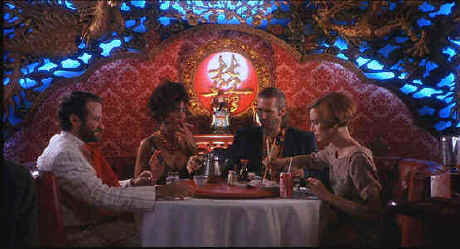

| Fisher King,The/A,B+ |
| Columbia/1991/138m/ANA 1.85 |
Everything comes together to perfection in The Fisher King.
Marrying the script by sensitive Richard LaGravanese with director Terry Gilliam’s splendid
imagination took the film to another level. Brilliant casting insures the assets of writer and
director.
Jack Lucas is a slick talk radio host with ambitions for television
stardom. Taking a flip attitude to on the air callers is Jack’s signature style. Popular with
audiences, Jack glides through life, stepping up the ladder with the confidence of a king, only to
fall from grace. When a psychotic regular caller seeks Jack’s help, his smart ass dismissal leads
to a horrible disaster.
 |
|
Playing matchmaker with chopsticks. ©Columbia |
Several years after the incident Jack
is no longer the ball of energy igniting the airwaves. He lives with the decidedly blue collar
owner of a video store. Drunk and feeling sorry for himself, Jack is saved from some neighborhood
toughs by a band of homeless "knights" led by Parry. It turns out that Parry and Jack are
indelibly linked. Parry is living out a nightmare. In his twisted vision his only hope is to find
the holy grail. For Parry, the grail is the key to unlock his life. For Jack, the hunt for the
grail is nothing more than a stand-in for the search for his own humanity.
A story of love and redemption, The Fisher King succeeds on many
levels. With it’s mythological sub structure there is a call to a return to an understanding of
chivalry. There is no denying the visual power of Parry’s hallucinations. But it all boils down
to The Fisher’s King’s understanding of friendship and the priorities of life.
The Fisher King is highlighted by terrific performances. Jeff Bridges may be the best actor of his generation.
Finding the truth to Jack makes for an extremely complex role. From his acid on-air personality to
the to his brush with moonlight and romance, Bridges is centered on a universe of truth. Robin
Williams is a unique talent. Parry is a fine showcase for him to mine some of the sadness that
lurks underneath the veneer of every brilliant comic. Mercedes Ruehl brings a wonderful sense of
reality to The Fisher King. Anne Napolitano is the last person on earth you’d expect to
find with Jack Lucas, but Ruehl gives her something special that leaps the obvious bounds. And who
can forget Michael Jeter’s outrageous transvestite bit as Streisand doing "Lydia," or
the beautiful moment when Williams sings "Lydia, the Tattooed Lady."
The anamorphic transfer from Columbia delivers vibrant colors and
excellent shadow detail in all lighting conditions. Images are very filmlike. Reminders of video
disappear completely. Some slight artifacting in the form of high grain in small sections of white
objects creeps onto the DVD, but overall this is another example of the best of DVD. The Dolby
Digital 2 Channel Surround is well recorded with crisp dialogue and an open ambiance.
|
|
|
|


News, information, features about current films in theaters and in the
pipeline. Easy to use interface.

The DVD Forum is an international association of hardware
manufacturers, software firms and other users of Digital Versatile Discs (the "DVD
Format"), created for the purpose of exchanging and disseminating ideas and information about
the DVD Format and its technical capabilities, improvements and innovations.

DVDPlanet is the DVD
incarnation of legendary laser retailer Ken Crane's. Deep discounts and serious service.

The National Film Preservation Foundation (NFPF) is the nonprofit organization created by the U.S. Congress to save
America's film heritage.

Information on film sound in theaters and home theaters. Lots of helpful information provided in a
handsome interface.

A vast reservoir of DVD information, reviews, the kitchen sink. Check
out their huge DVD database including reviews from many sites.

The
Movie Poster Archive include extensive poster images from the films of stars like Susan Hayward,
Kirk Douglas, Katharine Hepburn and many more. Our featured star is Robert
Mitchum |